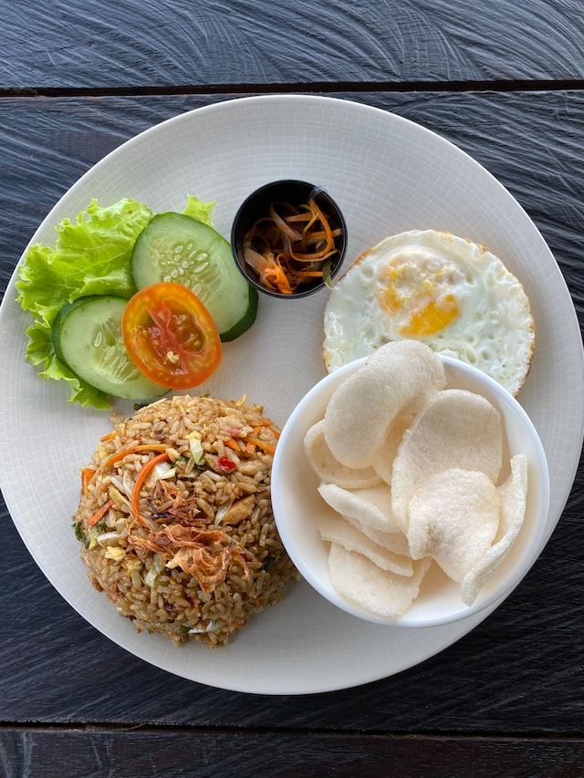

Nasi Goreng
Home

Photo by Iosi Pratama on Unsplash
Description
Nasi goreng is a Southeast Asian fried rice dish, usually cooked with pieces of meat and vegetables.
It is one of Indonesia's national dishes. It is also eaten in Malay-speaking communities in countries such as Malaysia,
Singapore and Brunei.
Ingredients
- Cooked cold rice
- Chicken
- Kecap manis (sweet soy)
- Chilli
- Onion
- Garlic
Steps
- Cook a bowl full of rice
- Heat oil in a pan and add the onion, chili, garlic and cooked chicken
- Add the other ingredients
- Add the cooked rice to the pan and keep stirring